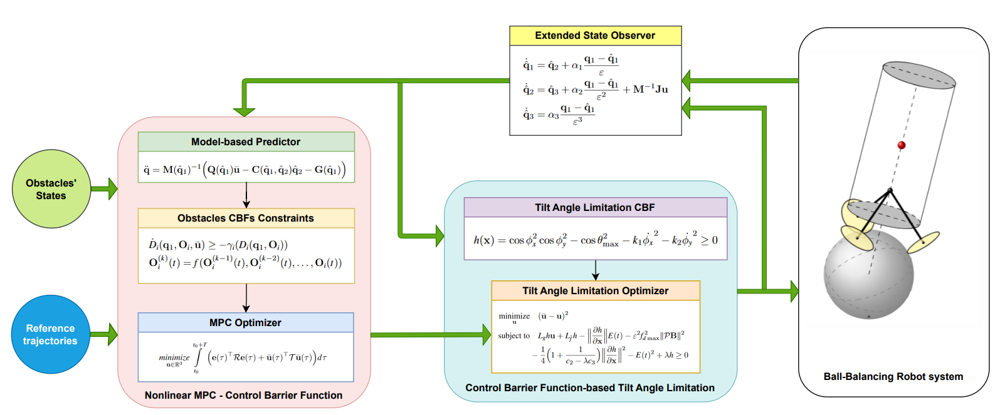

Highlight publications
|  |
CBFs-based Model Predictive Control for Obstacle Avoidance with Tilt Angle Limitation for Ball-Balancing Robots
|

|
A novel approach of Consensus-based Finite-time Distributed Sliding Mode Control for Stewart platform manipulators motion tracking
|

|
Time-optimal trajectory generation and observer-based hierarchical sliding mode control for ballbots with system constraints
|